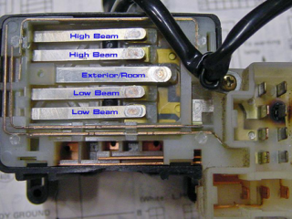

-
Hello so my interior and tail light connector don't move when I twist the switch. The connector IN the light switch. I was trying to sand it to get better contact but this is not not the problem. The little connector stay away from the contact even if I twist the switch. When I bent it to touch the contact the light come on but if I left it like that my battery will drain. Does someone know how to repair this? Thank you -
It is nearly impossible to get the switch to work correctly again. I spent several hours with tweezers and needle nose pliers trying to bend my contacts but I only made it worse. I highly recommend buying a replacement on eBay or 300zxpartsforyou.com'85 2+0 Turbo -
Depending on the year of car you have, you can get a switch that has new contacts to fit your stalk housing.
It's literally the second stickied post in this subforum.
84 AE/Shiro #683/Shiro #820/84 Turbo -
I am having issues with my 86NA switch as well and read somewhere in the forum a year ago or so that it was best to replace the switch rather than try to fix the one in the car. I have just ordered one from vintagezparts.com and plan on installing it next week sometime. The issue I am having is when I put the lights on bright the drivers side go out then may come on later or just stay out. When I move the switch back the non-bright position all front lights function as normal. So I'll be looking for the steps to take that old switch out and replace it if any of you can point me to them that would be appreciated. I do have the FSM and clymer books as well but thought someone on here might have some experience that would be helpful.1978 280Z - great fun!
1981 280ZX - more fun!!
1986 300ZX NA2T - Lots of fun!-
 #4.1mwolvinm commentedJust make sure it's not the connector that plugs into the light bulb. I had intermittent head lights on mine, which I traced down to those (driver side one month, then passenger the next). Fortunately, the connectors are readily available and need a simple solder/splice to replace. And they're cheap....
#4.1mwolvinm commentedJust make sure it's not the connector that plugs into the light bulb. I had intermittent head lights on mine, which I traced down to those (driver side one month, then passenger the next). Fortunately, the connectors are readily available and need a simple solder/splice to replace. And they're cheap....
-

Copyright © 2006–. All rights reserved. Privacy Policy
Comment